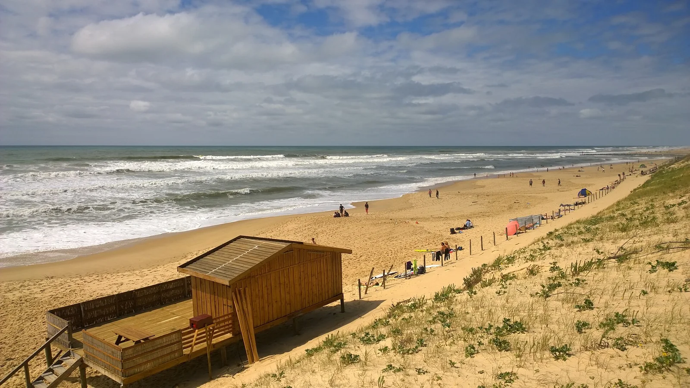

Mimizan Plage
Landes, France · surf

Beach break landais agréable encadré par deux digues, avec des pics réguliers. Bon compromis pour les intermédiaires.
- Lieu
- Landes, France
- Niveau
- Intermédiaire
- Activités
- surf
- Type d'eau
- Mer / océan
- Coordonnées
- 44.21, -1.30 (position approximative du secteur)
Dangers à connaître
- Baïnes typiques des Landes.
- Bancs de sable changeants.
Le conseil d'Ocean Buddy
Surfe près des zones surveillées et repère les courants le long des digues.
Ouvrir dans Ocean Buddy Télécharger sur l'App Store
Source : Description historique Ocean Buddy · vérification externe en attente.